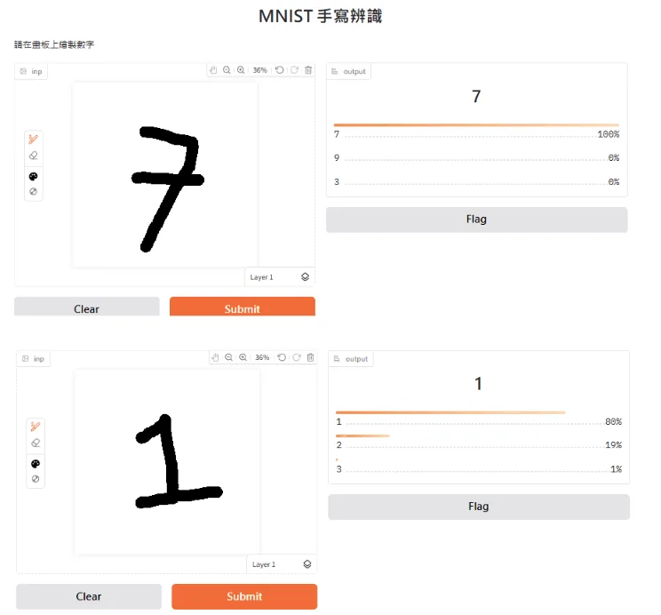
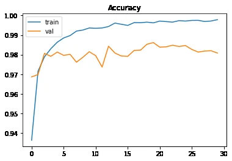
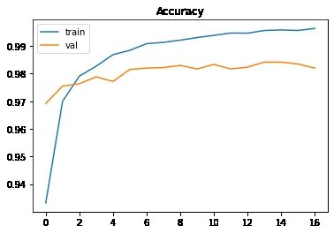
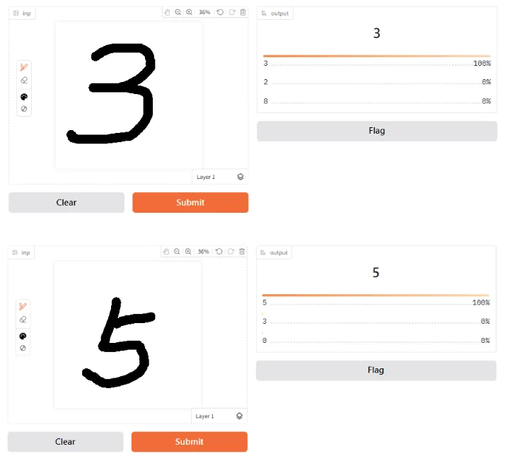
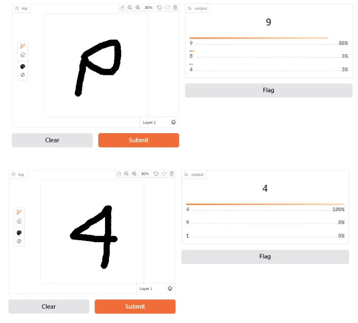

訓練一個認得手寫數字的 AI
這堂課第一次親手「訓練」AI：讓它看 6 萬張手寫數字圖片，學會分辨 0 到 9。我從老師的範例開始，一次改一個設定、看分數怎麼變，每次遇到不懂的地方就請 AI 解釋。

想解決的問題
老師範例的正確率是 93.51%。我想知道改哪些設定會更好，而且要弄懂「為什麼」。
AI 怎麼幫忙
每次實驗結果出來，就請 ChatGPT 解釋原因；模型突然壞掉時，也是靠它找出問題。
成果
正確率從 93.51% 提升到 98.31%，還做了一個可以手寫測試的小網頁。
01過程
- loss function（損失函數）：AI 用來計算「自己猜錯多少」的方法
- optimizer（優化器）：AI 根據錯誤調整自己的方式
- learning rate（學習率）：每次調整的步伐有多大
- epoch：把全部訓練資料看過一輪
-
先跟著課堂做一次，把每一步弄懂
用的是經典的 MNIST 資料：6 萬張 28×28 像素的手寫數字給 AI 學習，另外 1 萬張留著「考試」。考試的分數才代表 AI 的真實實力，後面所有比較都用這個分數。老師範例的分數是 93.51%。
-
換一個比較合理的評分方式
老師提示：分類問題其實更適合用
categorical_crossentropy，「可以問問 AI 為什麼」。問完之後，我的理解是：這種方法專門看 AI 有沒有把正確答案的機率給得夠高，而且「很有自信卻猜錯」時會罰得很重；原本的mse只是比較數字差多少，對「10 選 1」的分類問題不夠敏感。結果正確率提升到 95.89%，架構都沒改，就多了 2% 以上。
-
換成熱門的 Adam，結果整個壞掉
老師建議也可以試試流行的 Adam 優化器。我沿用原本的設定直接換，正確率竟然掉到 21.01%，幾乎辨識不出來。
問了 ChatGPT 才知道：原本的學習率 0.087 對 Adam 來說太大了，等於每一步都跨太大、一直跳過正確答案。改成 0.001 之後恢復正常，達到 95.83%。
這裡學到的事 我是先用相同參數實際跑過、看到問題才去問 AI，而不是一開始就問「Adam 要怎麼調才最好」。所以這次真的從錯誤中學到原因，而不是只拿到一個答案。 -
「越深越好」嗎？實驗兩種架構
老師上課提到「越深的模型，可能效果越好」，我試了兩種：
- 每層 20 個神經元、疊 10 層：95.39%，沒有變好
- 神經元從 512 → 256 → 128 → 64 逐漸變少：97.87%，大幅提升
問了 AI 之後我的理解是：一張圖有 784 個點，如果一開始就壓縮到只剩 20 個，很多資訊就消失了，疊再深也沒用；逐漸縮小，才能一層層濃縮出重要的資訊。
-
多訓練幾次會更好嗎？
我讓模型訓練 30 輪，並拿 10% 的資料當「小考」。把成績畫出來發現：練習題的分數一直上升，但小考成績大概在第 10 輪之後就停在 98% 左右了。
所以我加了「提早停止」：小考成績連續 3 輪沒進步就停下來，並回到成績最好的那一版。最後得到 98.31%，是所有實驗中最好的結果。

訓練 30 輪：train（練習）一直上升，val（小考）很早就持平 
加入提早停止：沒進步就停，不浪費時間
02成果
所有實驗一覽
| 實驗 | 改了什麼 | 正確率 | 變化 |
|---|---|---|---|
| 老師範例 | 起點 | 93.51% | — |
| 換評分方式 | mse → categorical_crossentropy | 95.89% | +2.38% |
| 換 Adam | 學習率沿用 0.087 | 21.01% | 壞掉了 |
| Adam 調學習率 | 學習率改成 0.001 | 95.83% | 和原本差不多 |
| 加深到 10 層 | 每層 20 個 × 10 層 | 95.39% | −0.44% |
| 逐漸縮小的架構 | 512 → 256 → 128 → 64 | 97.87% | +2.04% |
| 多訓練 | 30 輪 | 98.04% | +0.17% |
| 提早停止 | 沒進步就停，回到最佳版本 | 98.31% | +0.27%，最佳 |
用自己的手寫數字測試
最後用 Gradio 做了一個小畫板，可以直接手寫數字給 AI 認。基本的 3 和 5 都是 100%；我還故意寫了一些奇怪的寫法：


03我的心得
這次作業比較像是一邊實作、一邊學習。以前看到 loss、optimizer 這些名詞，通常只是直接套用網路上常見的做法。這次從老師的範例開始一點一點修改、測試，在 AI 的協助下理解「為什麼要這樣改」，再用實際分數驗證，體會深刻很多。
換成 Adam 時模型直接學不起來，透過 AI 才知道是學習率太大，當下真的覺得 AI 用來找問題非常厲害！
AI 的確幫我省下大量查資料的時間，但要嘗試什麼方法、實驗結果合不合理、它說的是不是真的，最後還是要自己判斷。
💼 帶回工作用
這一堂可以套用到工作上的地方：
- 先自己試，看到問題再問 AI直接問「最好的做法是什麼」只會拿到一個答案；先試過、帶著具體的現象去問，才會真的懂原因，也比較能判斷 AI 說得對不對。
- 一次只改一個地方，用同一把尺比較跟製程改善的實驗一樣：每次只動一個變因、用同一組測試資料評分，才知道是哪個改變有效。
- 把 AI 當成找問題的夥伴結果怪怪的時候，把「改了什麼、看到什麼」完整告訴 AI，它通常能很快指出可能的原因。